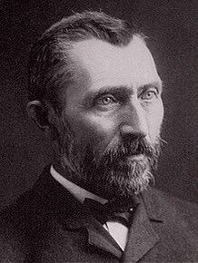

ฟัน โคค เกิดเมื่อวันที่ 30 มีนาคม ค.ศ. 1853 ที่เมืองซึนเดิร์ต (Zundert) ในภูมิภาคบราแบนต์ ประเทศเนเธอร์แลนด์
(เป็นเมืองที่ติดกับชายแดนเบลเยียม) มีพ่อเป็นนักบวชในศาสนาคริสต์ มีพี่น้องด้วยกันทั้งหมด 6 คน
เป็นชนชั้นกลางที่มีชีวิตแบบแคบ ๆ ไม่ชอบการเปลี่ยนแปลง เขาเป็นเด็กหนุ่มที่ดูเงอะงะ
ไม่คล่องแคล่วเหมือนคนมีปมด้อย ค่อนข้างใจน้อย เขามีนิสัยชอบเก็บตัวและมีอาการของโรควิตกกังวล
และยังมีอารมณ์ที่อ่อนไหวง่าย อ่อนโยน มีความเมตตาต่อคนทุกข์ยาก ทำให้ทุกคนมองเขาว่าเป็นคนเจ้าอารมณ์ น่ารำคาญ
เมื่ออายุได้ 16 ปี เขาได้เข้าทำงานที่ห้องภาพแห่งหนึ่งที่เดอะเฮก กับญาติที่ทำงานด้านศิลปะ
และเมื่อเขามีอายุได้ 18 ปี เขาก็ถูกส่งตัวไปยังห้องภาพที่สาขาปารีส ด้วยความที่เขาเป็นคนซื่อ
และความเบื่อหน่ายที่ทางห้องภาพเอารูปเลว ๆ มาหลอกขายกับคนที่ไม่รู้จักศิลปะ
เขาถึงกับบอกให้ลูกค้าไม่ให้ซื้อภาพนั้น จนกระทั่งทางร้านไม่พอใจไล่เขาออกจากงานในที่สุด
หลังจากนั้น เขาจึงหันไปศึกษาทางศาสนาอย่างจริงจัง หลังจากสอบเข้าวิทยาลัยศาสนาที่นครอัมสเตอร์ดัมได้ 14 เดือน
เขาพบว่าตนเองไม่ได้อะไรอย่างที่ตั้งใจไว้ จึงเลิกเรียนเสียและได้ย้ายไปอยู่ในเหมืองถ่านหินในตำบลบอรีนาฌ
เพื่อเทศนาสั่งสอนและช่วยเหลือคนทุกข์ยากในเหมืองนั้นโดยไม่รู้จักเหน็ดเหนื่อย
เขาอุทิศเงินจำนวนหนึ่งให้กับคนทุกข์ยากโดยที่ตนเองมีเงินใช้อย่างจำกัด และต้องกินเศษขนมปัง
ทำให้ร่างกายผอมลงและเป็นพิษไข้
เพราะการบริโภคที่ผิดอนามัยและความหนาวเหน็บจากกองไฟกองเล็กที่ไม่อาจสู้กับความหนาวเย็นของอากาศได้ ทำให้ความงก
ๆ เงิ่น ๆ ของเขามีมากยิ่งขึ้น
ฟัน โคค เป็นคนที่พูดไม่เก่ง ทำให้การเทศนาสั่งสอนของเขาไม่อาจจับจิตชาวเหมืองได้
ประกอบกับความใจบุญของเขาทำให้คนเหล่านั้นมองว่าเขาเป็นคนแปลกแตกต่างจากคนเหมือง ทำให้เขาเศร้าใจมาก
และศาลพระก็ไม่ยอมแต่งตั้งให้เขาเป็นนักเทศน์ ในที่สุดชีวิตของเขาต้องเร่ร่อนไปอย่างไร้จุดหมาย
เขาไม่ยอมแม้กระทั่งที่จะเขียนจดหมายถึงเตโอ น้องชายคนสนิท
จนกระทั่ง ปี ค.ศ. 1880 เขาได้เขียนจดหมายมาบอกกับเตโอ น้องของเขาว่า เขาค้นพบแล้วว่า
ศิลปะคือทุกสิ่งทุกอย่างของเขา และเข้ามาแทนที่สิ่งอื่น ๆ จนหมด เขาใช้เวลาเพื่อศึกษามันด้วยตนเองอย่างจริงจัง
ก่อนหน้านั้นเขาเคยเขียนรูปมาบ้างแต่ไม่จริงจังเท่าไหร่ แต่ต่อจากนี้ไปมันคือชีวิตจิตใจของเขา (จดหมายที่ฟัน โคค
เขียนถึงน้องชายของเขา ในปัจจุบันก็เป็นที่ต้องการและมีความสำคัญมากต่อการชมงานศิลปะของเขา)
ฟัน โคค ใช้ชีวิตอยู่บนเส้นทางสายศิลปะอย่างลำบากยากแค้น เขายิงตัวเองเข้าทางซี่โครงด้านซ้าย ในวันอาทิตย์ที่ 27
กรกฎาคม ค.ศ. 1890 หลังจากการเขียน "รูปทางสามแพร่ง" (Wheat Field with Crows)
(งานชิ้นนี้อาจจะสื่อถึงการหาทางออกให้กับของชีวิตของเขาเอง ที่เปรียบเสมือนทาง 3
สายที่มาบรรจบกันทำให้เลือกไม่ถูกว่าจะไปทางใดต่อ) ซึ่งเป็นงานชิ้นสุดท้ายของเขาที่ทุ่งนา
แต่เขาไม่เสียชีวิตทันที โดยเขาได้เอามือกดปากแผลไว้และเดินกลับมาที่ร้านกาแฟที่เขาพัก

ฟัน โคค สิ้นใจในวันอังคารที่ 29 กรกฎาคม ค.ศ. 1890 ท่ามกลางความเศร้าโศกเสียใจของเพื่อน ๆ
ศพของเขาถูกฝังไว้ในสุสานเล็ก ๆ ที่เมืองโอแวร์ซูว์รวซ ทางตอนเหนือของประเทศฝรั่งเศส